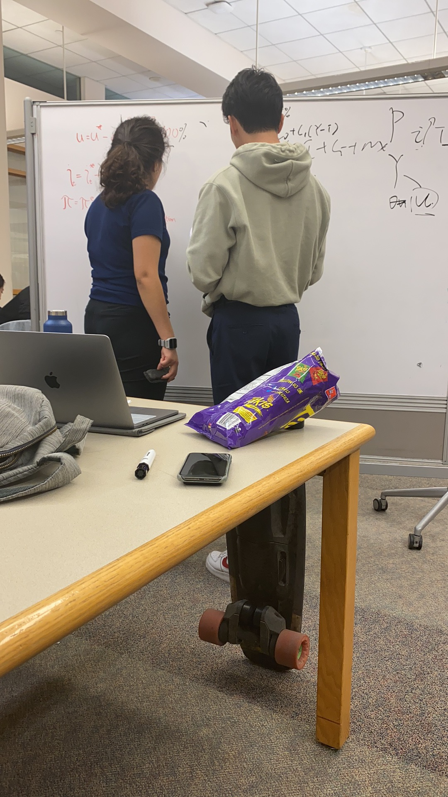
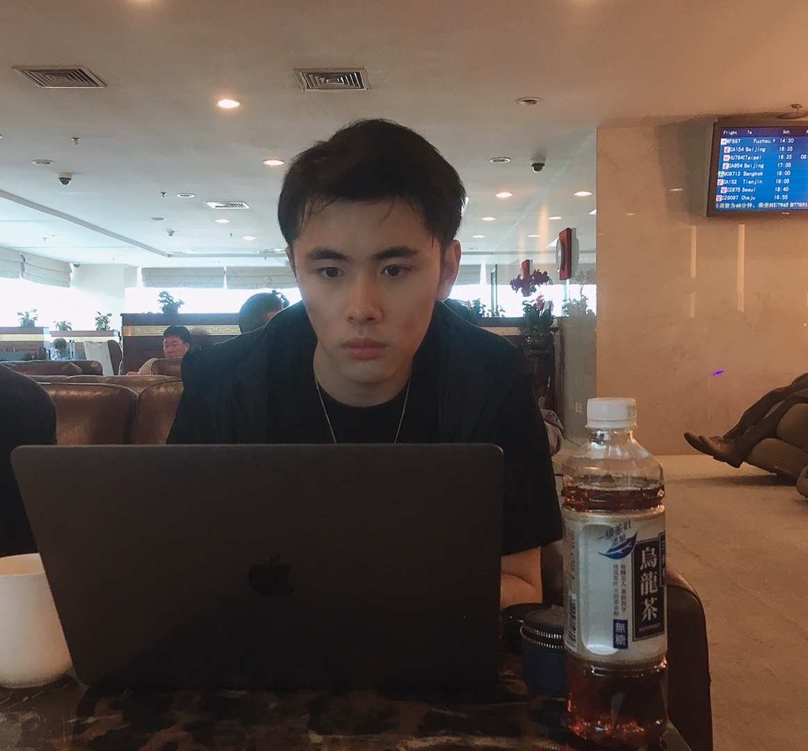
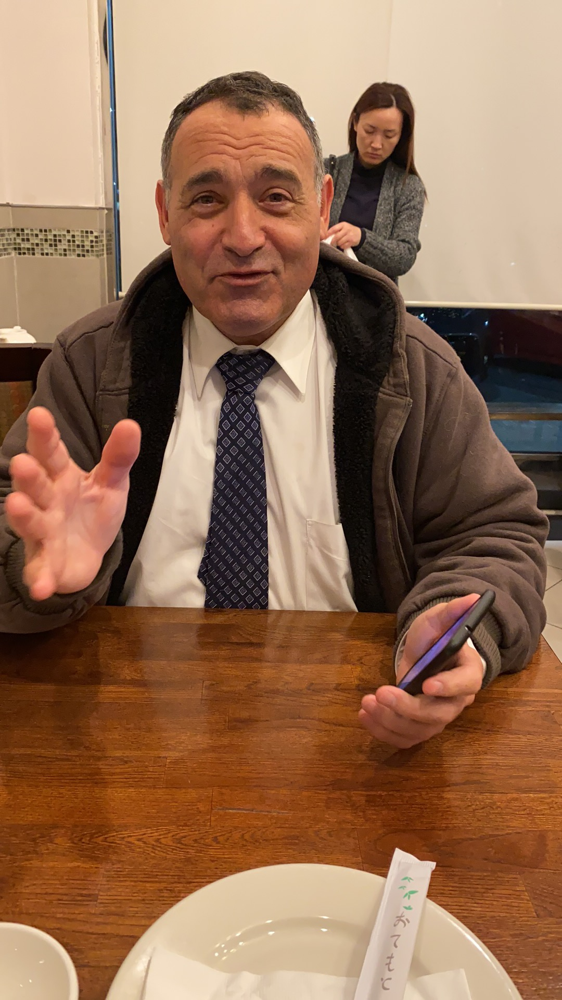
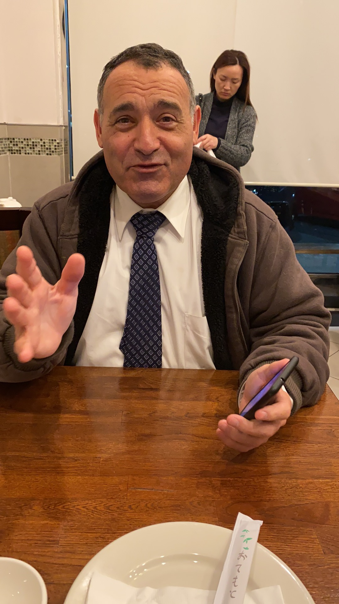

Yuxing Li
My interest and love in learning trading strategies led my passion for major in
Business Economic. Since my childhood, I have been listening to my parents discuss
financial plans for our family business. The discussions I enjoyed most involved
strategies to improve our stock trading. I asked my brother who graduated from UCI
to recommend scholastic articles on the subject. After reading them, I came up with
a strategy using chart pattern theories. In order to test my strategies, I taught
myself to write trading simulation functions on the TradeStation Platform. The
results I simulated strongly impressed my parents, which inspired me to pursue my
path in finance and become a professional financial advisor in the future.
To further prepare for my intended major, I have taken all prerequisite courses for
Business Economics. I have also concentrated on my writing classes so that I could
improve my analysis and communication skills to provide straightforward answers
and clear financial advice. Focusing on financial terminologies has also helped me to
choose precise words when answering questions or offering advice. While actively
participating in group projects, I have practiced the process of maximizing value
through communication with limited time and resources. To grow my sensitivity to
financial markets, I keep browsing business news on Yahoo Finance and CNN Money
websites every morning. In addition to the required reading for my courses, I have
also read other financial books from the supplemental list provided by my
professors including The Intelligent Investor. My discussions about these books with
my professors enhanced my critical thinking ability and expanded my financial
ideologies to multiple dimensions.
As I continue to major in Business Economics at UC, I will equip myself with both
knowledge and experience. I will enhance my strategic thinking skills and challenge
myself with competition programs. I am eager to join wealth management research
teams and apply for internship opportunities, so I can help others to develop
investment strategies and manage financial portfolios. I believe it is a pleasure to
show love to people, and I will volunteer in student associations to help classmates
in need.
Experience
Market Coodinator
• I led a team to introduce the mobile application named Juhuiyuan to local restaurants and supermarkets.
Bookstore Assistant
• assisted the manager to record book names on database lists and helped
customers find books
Student Mentor
• helped classmates to solve mathematic problems with other student mentors.
Education
UC Riverside
Portfolio




